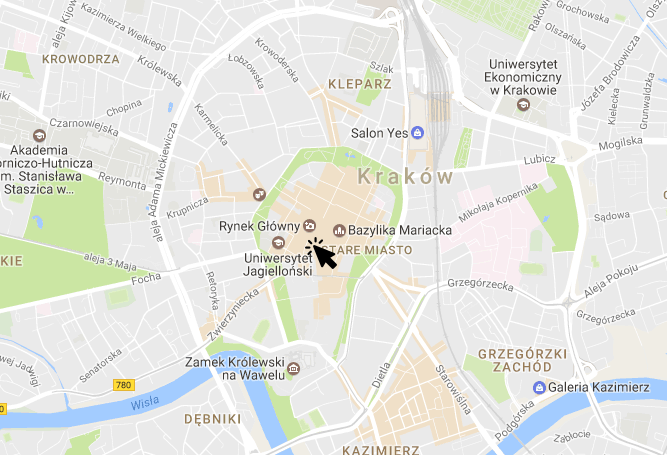
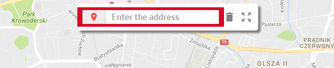
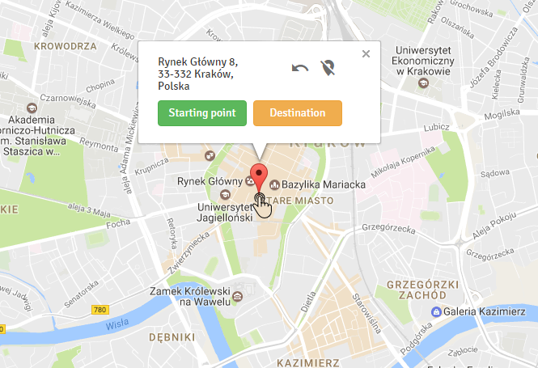
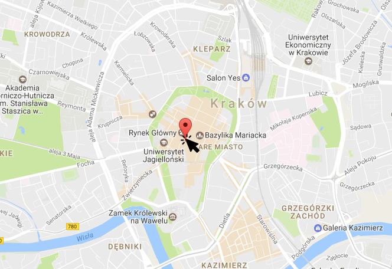
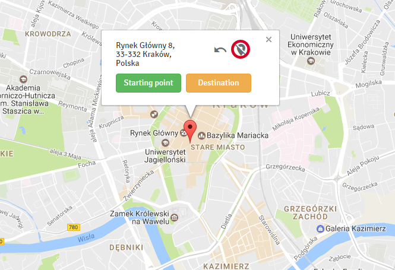
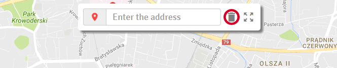
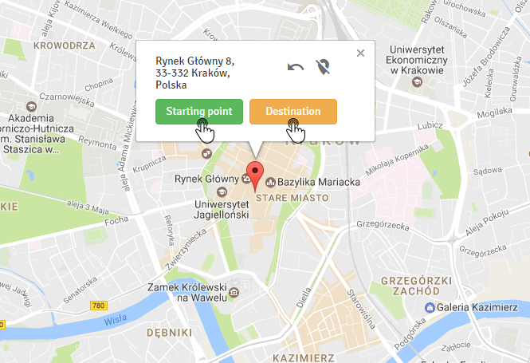
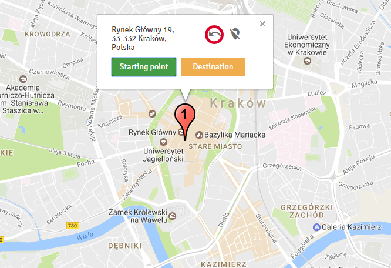
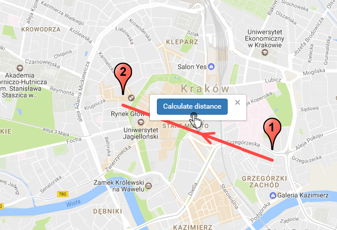

Guide

Create a marker
To create a marker, left-click anywhere on the map.

Create a marker using an address
You can also enter any address using the input field.

Show marker info
To show information about a marker, left-click on it.

Fit map to created markers
To view all created markers, fit the map to them.

Delete the marker
To remove a marker, right-click on it.

Delete the marker using button
You can also remove a marker, using the info window button.

Delete all markers
To remove all markers, use button placed on top panel.

Select the starting and destination points
Use the info window buttons to select the points between which the distance will be calculated.

Deselect the marker
If you want to deselect the marker use the info window button or just select another one.

Calculate the distance
When you select 2 markers you can calculate the distance between them.